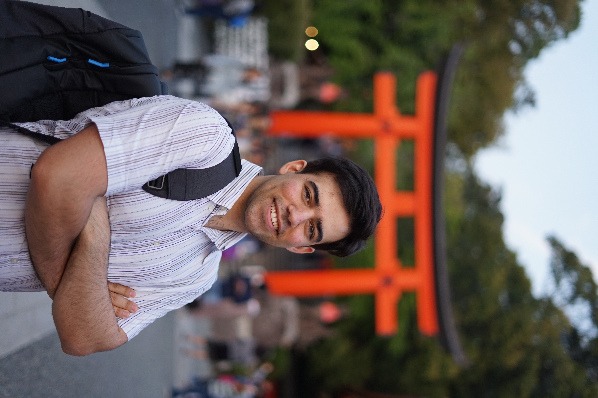

Mehran Khodabandeh
mkhodaba[at]sfu[dot]ca
As a co-founder of Variational AI, I am passionate about harnessing the power of Generative AI to revolutionize the field of drug discovery. Our mission is to invent novel molecular compounds with the potential to become life-saving medicines.
In parallel with my entrepreneurial endeavors, I have been completing my doctoral studies in computer science at Simon Fraser University, where I have had the privilege of working with Prof. Greg Mori. My research interests center around the development of innovative machine learning algorithms with practical applications in the domain of computer vision.
Throughout my PhD journey, I have had the opportunity to gain valuable industry experience through internships at renowned tech companies, including Google Research (Seattle), Microsoft (Redmond), and D-Wave (Burnaby). Additionally, I spent nearly a year in Japan conducting research at the National Institute of Informatics (Tokyo).
My academic path began in Iran, where I earned my B.Sc. degree from Sharif University of Technology, before pursuing my M.Sc. degree under Prof. Greg Mori's supervision at SFU.